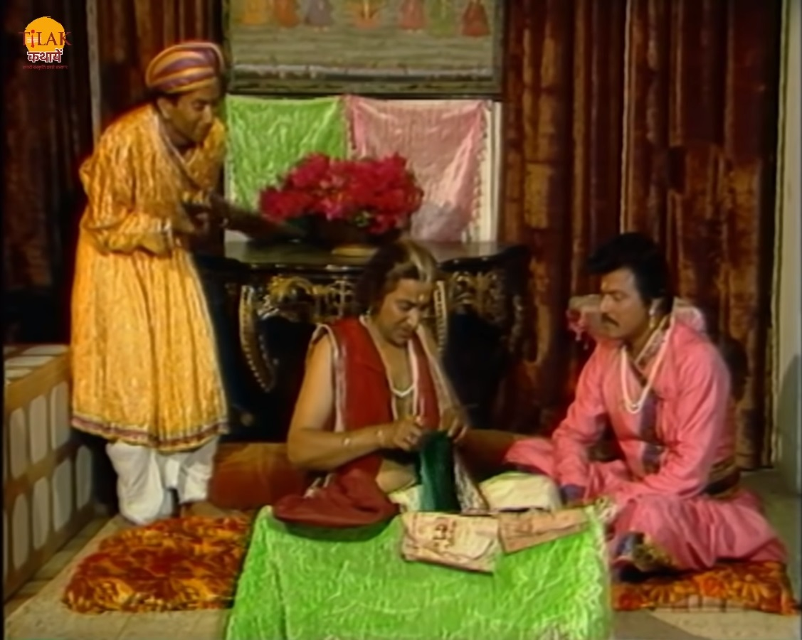
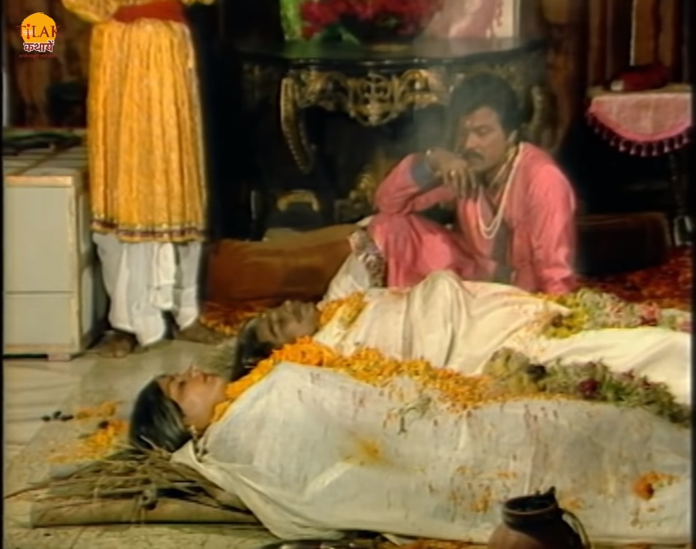
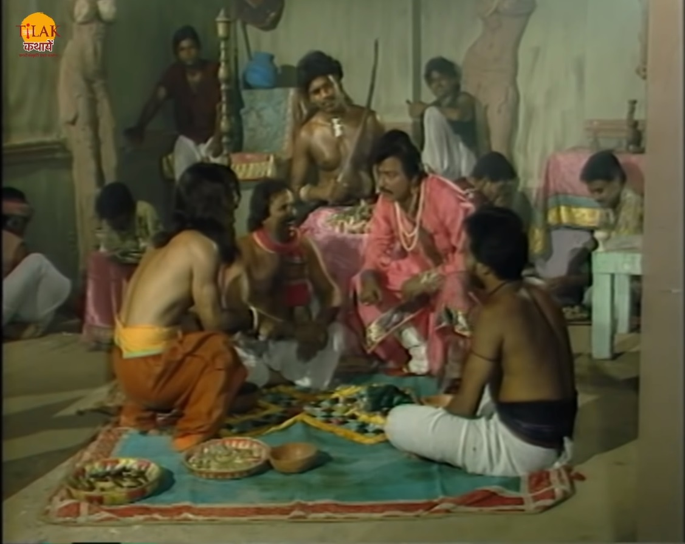
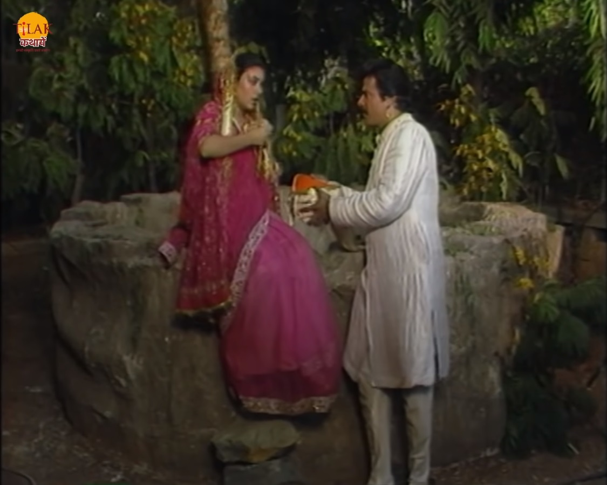
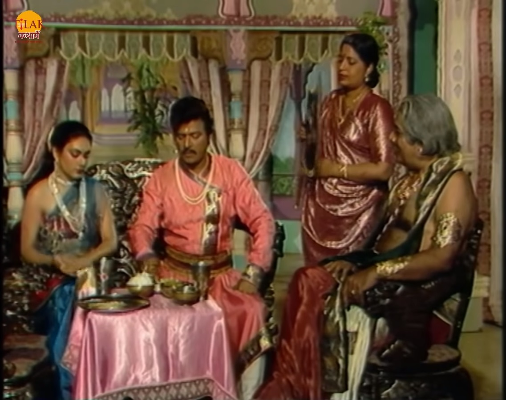

विक्रम और बेताल भाग 19 - जुए की बुरी लत में फँसा गोपु

विक्रम बेताल को फिर से पकड़ कर ले चलता है और बेताल फिर से उसे एक कहानी सुनता है। इलकोर नाम के नगर में एक सेठ रहता था उसके कोई औलाद नहीं थी मनते माँगते माँगते बुढ़ापे में उन्हें एक पुत्र प्राप्त हुआ जिसे उन्होंने लाड़ प्यार में बिगाड़ दिया और उसकी संगत भी बुरी हो जाती है स्कूल जाने तक उसे झूठ बोलने और जुआ खेलने की लत लग चुकी थी। जब भी उसकी कोई शिकायत आती तो उसकी माँ सब पर पर्दा डाल देती। ऐसे ही सेठ का लड़का गोपु जब बड़ा हो गया तो सेठ ने उसे कहा की तु अब मेरे कारोबार में हाथ बटाना शुरू कर दे। सेठ उसे 100 मोहरे देकर मंडी में भेजता है और कहता है की पिछले वर्ष एक मोहर में एक बोरी अनाज मिलता था इस बार तो फसल भी अच्छी हुई है तो सेठ का लड़का कहता है की वो बहुत अच्छा सौदा करके मंडी से आँज ले आएगा लेकिन वह घर से मोहरे लेकर सीधे जुआ खलेने के लिए चला जाता है और सारा धन हार जाता है। गोपु वापस अपनी माँ के पास आता है और उन्हें भावुक करके और 200 मोहरे ले लेता है और वो धन भी जुए में हार जाता है।


कुछ समय बाद दोनों सेठ और सेठानी की मृत्यु हो जाती है लेकिन तब भी गोपु की आदत नहीं बदलती और माता पिता की मृत्यु के बाद वो अपने घर को ही जुए का अड्डा बना देता है धीरे धीरे वो सारा धन ज़मीन और घर हार जाता है और घर से बेघर होने के बाद वो दरबदर भटक रहा था कि और सोच रहा था की किसी तरह उसे कुछ धन मिल जाए तो वो अपना सारा हरा हुआ धन वापस पा लेगा तो उसे याद आता है की चंद्रपुर नगर में उसके पिता का एक परम मित्र रहता है रटो वह उनके पास धन माँगने जाता है और उनके पास जाकर झूठी कहानी सुन देता है। गोपु के पिता का मित्र उसे अपनी शरण में ले लेता है। सेठ अपनी बेटी रत्ना के लिए गोपु को पसंद कर लेता है और दोनों की शादी करा देता है। शादी होने के बाद गोपु सोचता है की वो तो वहाँ पैसे माँगने गया था उल्टा उसके गले बीवी पड़ गयी अब उसे यह चिंता थी की अब उसे लेकर कहाँ जाएगा। गोपु के दिमाग़ में एक भयंकर ख़याल आता है वो जुए के चक्कर में इतना फँस चुका था की वो रत्ना के सारे गहने बहाने से निकलवा लेता है और बाद में उसे कुएँ में धक्का दे देता है। गोपु रतना के सारे गहने लेकर जुआ खेलने जाता है और सारे गहने फिर से हार जाता है।।

रत्ना कुएँ में गिरने के बाद भी नहीं मारती है वो मदद के लिए आवाज़ लगती है तो पास से गुजर रहा एक आदमी उसकी आवाज़ सुन उसे निकाल देता है। रत्ना अपने घर वापस आती है और अपने माता पिता को गोपु का किया नहीं बताती उल्टा एक काहनी बना देती है की रस्ते में उन पर डाकुओं ने हमला कर दिया और उसके सारे गहने लूटने के बाद उसे कुएँ में धकेल दिया और गोपु को अपने साथ ले गए। गोपु फिर से दरबदर भटकता है और फिर से एक नया झूठी कहानी बना कर अपने सासुरल जाने की सोचता है की उन्हें कहूँगा की उनकी रत्ना ने उनेक नाती का जनम दिया है तो वो उसकी झोली धन से भर देंगे। यह मंशा लेकर वह अपनी सासुरल जाता है और दरवाज़े पर रत्ना को देख हैरान हो जाता है।

रत्ना गोपु को देख कर कहती है की वो किसी भी बात की चिंता ना करे उसने अपने माता पिता को उनके किए का कुछ नहीं बताया है उल्टा उसने सब कुछ छिपा दिया है और गोपु को भी सब कुछ छुपाने के लिए कह देती है। गोपु को रत्ना अंदर लेकर जाती है और उसे भोजन कराती है। रत्ना में माता पिता फिर से अपनी बेटी को और गहने दे देते हैं जिसे डंके कर गोपु को थोड़ी भी ग्लानि नहीं होती उलट उसका लालच फिर से जाग जाता है और रात में वह रत्ना के गहने लेकर भागने लगता है तो रत्ना उसे देख लेती है और उसे रोकती है तो गोपु उसे मार कर भाग जाता है। अब बेताल विक्रम से पुछता है की बता रत्ना ने गोपु की गलती को चुप कर अच्छा किया या ग़लत। राजा विक्रम बोलता है की रत्ना ने गोपु की गलती को छिपा कर ग़लत किया है क्योंकि जिस आदमी ने गहने के लिए उसे कुएँ में फेंक दिया था उस इंसान को दोबारा मौक़ा देना सही नहीं था लेकिन उसने उसे डूबर मौक़ा देकर गलती की जिसका अंजाम उसे अपने प्रन देकर चुकाना पड़ा। राजा का उत्तर सुन बेताल फिर से उड़ जाता है और वापस अपने पेड़ पर जाकर लटक जाता है।